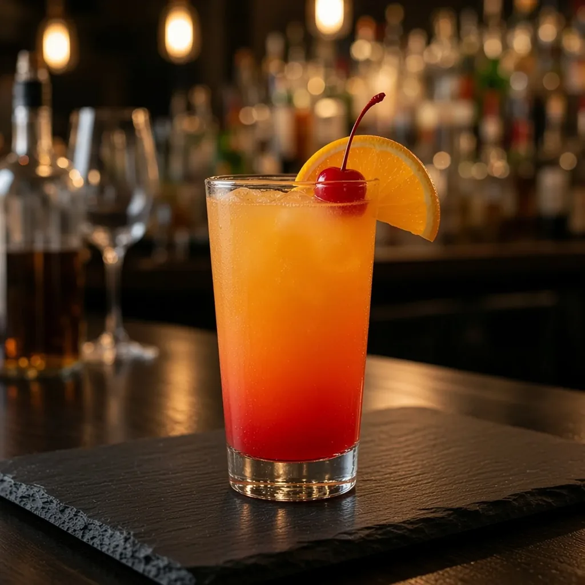

Tequila Sunrise
Tequila and orange juice with grenadine sinking through it.

Tequila and orange juice with grenadine sinking through it.

Leave out the tequila. Orange juice and grenadine give the same sunrise.
Pour it, then start a room. Drinking is optional in every game.